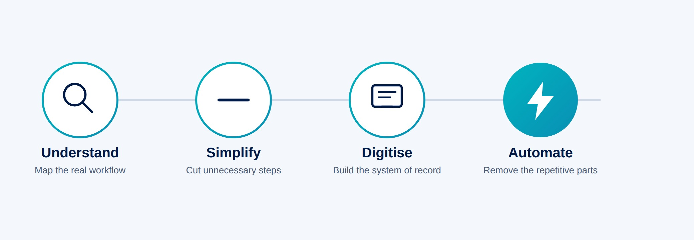

Spreadsheets are still where most operational decisions in South African businesses actually get made. They're flexible, everyone already knows how to use one, and nobody has to ask permission to open a blank sheet and start typing. That's exactly why they end up carrying work they were never built for — leave approvals, procurement, stock counts, customer records — right up until one wrong version of a file causes a real problem.
This isn't an argument against Excel or Google Sheets. It's about knowing when a spreadsheet has quietly become the operating system for a process it was never designed to support.
Spreadsheets are not the problem
A spreadsheet is one of the best tools ever built for working with numbers. For financial modelling, one-off analysis, budgeting scenarios, and any work one person owns from start to finish, nothing beats a grid you can reshape in seconds. A finance manager building a cash flow scenario, a project lead putting a quote together, an analyst testing a few assumptions before a meeting — that's exactly what spreadsheets are for, and no business system needs to replace it.
The problem isn't the tool. It's what happens when a spreadsheet stops being a personal workspace and becomes shared infrastructure that a whole team depends on to function.
When a spreadsheet becomes a business system
There's a fairly predictable set of signs that a spreadsheet has outgrown its job description. A few of the clearest:
- More than one version of the same file is in circulation, and nobody is entirely sure which one is current.
- A file is literally named something like leave_tracker_final_final_v2.xlsx, because someone needed to tell it apart from three earlier attempts.
- Information gets typed by hand from one spreadsheet into another, because two teams each keep their own copy of the same data.
- Individual staff members keep personal trackers alongside the "official" one, because they don't fully trust it.
- A manager has to email or WhatsApp someone to "send the latest numbers," because there's no single place to check.
- Approvals happen by forwarding an email thread or a screenshot, with no real record of who actually signed off.
- Producing a report for management takes someone the better part of a day, every month, copying, checking and reformatting.
None of these is a crisis on its own. Together, they describe a process that has outgrown the tool running it.
The hidden cost of manual processes
This cost rarely shows up as a line item, which is part of why it's allowed to persist for years. In practice, it shows up as:
- Time. Someone spends hours a week on data entry, reconciliation or report-building that adds no value beyond moving information from one place to another.
- Errors. A formula gets overwritten. A row gets deleted. A filter is left on and half the data quietly disappears from a report until someone notices, later than they'd like.
- Duplicated work. Two people update the same figure in two different files, and now there are two versions of the truth.
- Delays. An approval sits in an inbox for three days because the person who needs to sign off is travelling and nobody else has visibility of the request.
- Poor visibility. Management can't see where something stands right now — they can only ask someone to go and check.
- Key-person dependency. One person understands how the master spreadsheet actually works — the macros, the manual workaround for that one client, why column J is hidden. If they're out sick or they leave, that knowledge leaves with them.
- Weak audit trails. When something goes wrong, there's often no clear record of who changed what, or when.
None of this needs an invented statistic to make the point. Anyone who has chased a "final" version of a spreadsheet at 4:45pm on a Friday already knows what it costs.
What a business system changes
A properly designed business system doesn't remove the need for structure and judgement — it enforces the structure a spreadsheet could only ever suggest. In practice, that means:
- One source of truth — a single record for each piece of information, not five copies spread across five files.
- Role-based access — people see and edit what their role requires, not an entire shared file that anyone can change.
- Workflow management — steps happen in a defined order, with a request moving to the right person automatically rather than depending on someone remembering to forward it.
- Automated notifications — the person who needs to act gets told, instead of relying on someone to chase them.
- Structured approvals — decisions are recorded against a specific request, by a specific person, at a specific time.
- Dashboards and reporting — current numbers are available on demand, not reconstructed by hand once a month.
- Audit trails — every change is logged, which matters for compliance, and also just for settling "who changed this and why."
- Integrations — data flows between the systems that need it, instead of being retyped from one into another.
- Controlled data entry — validation stops obviously wrong data, like a negative stock count or a badly formatted date, from being saved in the first place.
Automation should follow the process
It's tempting to jump straight to automation once the decision to move off spreadsheets has been made. That's usually a mistake. Automating a broken process just makes the broken process run faster, and produces bad outcomes at a higher volume.
The sequence that actually works is simpler than it sounds: understand the workflow as it really happens today, not as the org chart says it should happen. Simplify it — remove steps that only exist because of a past workaround nobody has revisited since. Digitise what's left, so there's one structured system of record. Only then automate the parts that are repetitive, rule-based, and don't need a person's judgement every time.

Skipping straight to automation without doing the first three steps is how businesses end up with an expensive system that still needs someone to "just double-check it manually" anyway.
Examples of processes that can be digitised
In practice, the processes worth moving off spreadsheets tend to share a shape: more than one person touches them, and they repeat on a schedule. Common examples include:
- Employee leave requests and approvals
- Procurement and purchase order sign-off
- General approval workflows currently running through email or WhatsApp
- Customer or client onboarding
- Stock and inventory management
- Scheduling — staff rosters, deliveries, site visits, bookings
- Admissions and enrolment, for schools and training providers
- Customer service and support requests
- Finance workflows such as invoice approval or expense claims
- Recurring management reporting
- Document-heavy workflows — contracts, compliance records, sign-off packs
When should a business move beyond spreadsheets?
There's no universal revenue or headcount threshold where this becomes necessary — it depends on how the process behaves, not how big the business is. A few practical questions worth asking honestly:
- Do several people depend on the same spreadsheet to do their jobs?
- Does management need to know where something stands right now, not after someone checks?
- Are approvals happening manually, through email, WhatsApp or a hallway conversation?
- Does the process touch customers directly, where a mistake is visible to them?
- Do errors in this process have real operational or financial consequences?
- Is the business regularly re-typing the same data between files or systems?
If more than one or two of those land close to home, it's worth understanding what a dedicated system would actually change — not necessarily building one immediately, but knowing the option is there.
The goal is not more technology
It's worth saying plainly: the point of any of this is not to add technology for its own sake. A system that's more complicated than the problem it solves isn't an improvement — it's a new problem wearing a nicer interface. The goal is a process that's easier to run, not a longer list of software subscriptions.
That's also why the answer to "spreadsheets are causing problems" is never "delete Excel." Spreadsheets stay exactly where they're useful — analysis, modelling, one-off calculations, individual work. What changes is which processes are still allowed to live inside one.
Start with the process, not the software
The instinct when a process is clearly struggling is to go looking for software. It's more useful to start by writing down, honestly, how the process works today — who's involved, where it slows down, and where it's gone wrong before. That description is worth more than any product demo, because it's what makes the eventual system fit the business, instead of the other way around.
How Auris Nexus approaches business systems
This is the work we do most often: understanding how an organisation actually runs, finding the manual or disconnected steps inside it, and only then designing a system and the automation around those workflows — not the other way around.
In practice that means custom business software built around a specific process, workflow automation for the repetitive parts, web applications and portals where people need self-service access, AI integrated into a workflow where it genuinely removes work, and dashboards and reporting that give management visibility without someone building it by hand each month. Where it makes sense, we connect a new system to the tools already in use rather than replacing everything at once. You can see examples of this kind of work in our portfolio.
The goal isn't to replace every spreadsheet in the business. It's to make sure the ones still running critical processes are the exception, not the rule.